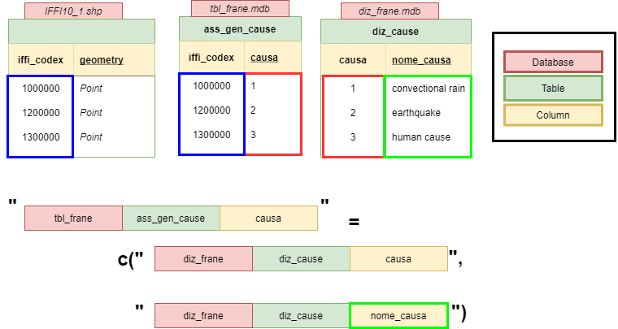

iffitoR-minipackageExample.RmdThe iffitoR-package exists to fascilitate the import of data stored in the iffi-database (Inventario dei Fenomeni Franosi in Italia) into R. This includes the calculation of the unique “iffi”-codex in the dabases. The joins within the non-spatial databases and the subsequent join to a shapefile.
The shapefile as well as the non-spatial data both in the end contain a column that holds the unique identifier for each mass movement. The so called iffi-kodex. Here we give a short introdcution to the package and how to query the data from the databases.
As the format of the iffi-database is likely to change at some point in the near future, the code here is far from beeing good. Still, it hopefully does what it is supposed to do.
library(iffitoR)
library(plotly)
library(glue)
library(RODBC)
library(forcats)
library(dplyr)
library(ggplot2)
library(tools)
library(stringr)
library(sf)The idea is, that there are three important files each time the make_shapefile gets called
PIFF_ID)In the attri-argument we pass a vector of the columns that are already in the attribute_database and don’t need any join to the dictionary database

In the joins-argument we pass a named list of hardcoded columns that are necessaey for the link and the data we actually want. The names are the "<name_of_attributedatabase>.<table>.<column_to_link>" and the values are c("<name_of_dictionary_database>.<table><column_to_link>", "<name_of_dictionary_database>.<table><column_of_data_we_want")
An example could look like this:
joins = list(
"tbl_frane.Geologia.litologia" = c(
"diz_frane.diz_litologie.litologia",
"diz_frane.diz_litologie.nome_litologia"
),
"tbl_frane.clas_ii_liv.movimento" = c(
"diz_frane.diz_movimenti.movimento",
"diz_frane.diz_movimenti.nome_movimento"
),
"tbl_frane.Generalita.Cod_tipo" = c(
"diz_frane.diz_tipo_movi.cod_tipo",
"diz_frane.diz_tipo_movi.tipologia"
)
)We only need to have the right paths at hand and the function make_shapefile will (hopefully) return an object of type sf
Important: The names of the databases are the names without any extension
Now we can call the function
# I use the path to the databsaes on the Eurac Network (am I connected to the VPN?)
# the path to the iffi polygons
landslide_poly_path = "path_to_landslide_polygons"
# the path to the iffi points
landslide_point_path = "path_to_landslide_points"
# the path to the folder with the iffi-databases
database_dir = "path_to_iffidatabase"
# we only want the dates from the attributes tables
attri = c("anno_min",
"mese_min",
"giorno_min")
# this only works under windows and is therefore not run here
os = Sys.info()["sysname"]
if (os == "Windows") {
iffi_sf = iffitoR::make_shapefile(
database_dir = database_dir,
attribute_database_name = "tbl_frane",
dictionary_database_name = "diz_frane",
shapefile = landslide_point_path,
attri = attri,
joins = joins
)
}
# we will use the data from the package here
iffi_sf = landsld
dplyr::glimpse(iffi_sf)
#> Rows: 10,482
#> Columns: 18
#> $ PIFF_ID <dbl> 20100, 30100, 30200, 30300, 30400, 30500, 30600, 40100, ~
#> $ area <int> 272156, 0, 0, 83566, 0, 0, 0, NA, 57402, 0, 0, 0, 0, 463~
#> $ first_level <chr> "complex", "area subject to rockfall/topple", "fall-type~
#> $ material <chr> "rock", "rock", "rock", "rock", "rock", "rock", "rock", ~
#> $ second_level <chr> "n.d.", "n.d.", "fall-type", "fall-type", "fall-type", "~
#> $ nome_causa <chr> "n.d.", "n.d.", "superfici di taglio preesistenti", "pre~
#> $ year_present <lgl> TRUE, TRUE, TRUE, TRUE, TRUE, TRUE, FALSE, FALSE, FALSE,~
#> $ month_present <lgl> TRUE, TRUE, TRUE, FALSE, TRUE, TRUE, FALSE, FALSE, FALSE~
#> $ day_present <lgl> TRUE, TRUE, FALSE, FALSE, FALSE, TRUE, FALSE, FALSE, FAL~
#> $ date_info <chr> "day", "day", "month", "year", "month", "day", "no date"~
#> $ date <date> 1967-01-01, 1993-09-25, NA, NA, NA, 2012-04-23, NA, NA,~
#> $ year.int <int> 1967, 1993, 1999, 1999, 2009, 2012, NA, NA, NA, 2011, 19~
#> $ month.int <int> 1, 9, 1, NA, 5, 4, NA, NA, NA, 1, NA, 8, 2, NA, 2, 2, 11~
#> $ week <int> 196701, 199339, NA, NA, NA, 201217, NA, NA, NA, 201102, ~
#> $ day.int <int> 1, 25, NA, NA, NA, 23, NA, NA, NA, 10, NA, 7, 11, NA, 21~
#> $ doy <dbl> 1, 268, NA, NA, NA, 114, NA, NA, NA, 10, NA, 219, 42, NA~
#> $ year.posix <date> 1967-01-01, 1993-01-01, 1999-01-01, 1999-01-01, 2009-01~
#> $ geometry <POINT [m]> POINT (726753.9 5210405), POINT (669896.9 5122515)~AS a first distinction events in the iffi-databse are classified according to two levels. The first level being a more coarse classification, and the second one a more detailed one
In Italian they are called tipologia (first level, more coarse) and nome_movimento (second level and finer)
The iffitoR::translate_iffi-function can be used to translate exactly those two columns. They will afterwards be called first_level and second_level
This function will fail, if the columns tipologia and nome_movimento are not queried in the joins
# if we are not working with the data from the package we still need to preprocess it a little bit
if(os == "Windows"){
iffi_eng = iffitoR::translate_iffi(iffi_sf)
iffi_eng %>% select(c(first_level, second_level)) %>% head()
}In order get some columns that make it easier to get an idea about the temporal information there is the function get_date_information
This creates the three integer columns year.int, month.int and day.int. In addition in creates two columns of class date. One beeing the exact date the other one the 1st of January of the year of the movement.
# same for the time information that is alrady in the data from the package
if(os=="Windows"){
iffi_date = iffitoR::get_date_information(iffi_eng)
iffi_date %>% select(matches("date|year|month|day")) %>% glimpse()
}
if(os=="Windows"){
iffi_sf_poly = iffitoR::make_shapefile(database_dir=database_dir,
attribute_database_name = "tbl_frane",
dictionary_database_name = "diz_frane",
shapefile = landslide_poly_path,
attri = attri,
joins=joins)
}
# how many polygons do we have?
dim(iffi_sf_poly)
if(os=="Windows"){
#trasnlate
iffi_sf_poly = iffitoR::translate_iffi(iffi_sf_poly)
# get date information
iffi_sf_poly = iffitoR::get_date_information(iffi_sf_poly)
}
# NOTRUN
if(os=="Windows"){
iffi_sf_poly %>%
count(second_level, sort=T) %>%
mutate(second_level = glue("{second_level} ({n})")) %>%
mutate(second_level = fct_reorder(second_level, n)) %>%
ggplot(aes(x=n, y=second_level)) +
geom_col() +
labs(title="Distribution of polygons in the iffi database",
subtitle = "in the second-level classification",
x = "# of events",
y = "") +
theme_light()
}
# NOTRUN
if(os=="Windows"){
iffi_sf_poly %>%
filter(year.int >= 1990) %>%
filter(str_detect(second_level, "transla|rota")) %>%
ggplot(aes(x=date, fill=second_level)) +
geom_histogram(position="dodge", bindwidth=30) +
scale_x_date(date_breaks = "1 year") +
theme_light() +
labs(x="", y="Number of Events", title="When did the slides happen?",
fill="") +
theme(
axis.text.x = element_text(angle=90)
)
}
landsld %>%
# filter(year.int > 1980) %>%
count(second_level, sort = TRUE) %>%
mutate(second_level = glue("{second_level} ({n})")) %>%
mutate(second_level = fct_reorder(second_level, n)) %>%
ggplot() +
geom_col(aes(x = n, y=second_level)) +
labs(title="Distribution of points in the iffi database",
subtitle = "in the second-level classification",
x = "# of events",
y = "") +
theme_light()
landsld %>%
filter(str_detect(second_level, "rotational|translational")) %>%
filter(date_info != "no date") %>% st_drop_geometry() %>%
plot_ly(data = ., x = ~year.posix, color=~second_level) %>%
layout(title="Distriubtion of rotational and translational slides", legend=list(x=0.3, orientation="h", y=-0.2), xaxis = list(title="Year"), yaxis=list(title="# of slides"))
#> No trace type specified:
#> Based on info supplied, a 'histogram' trace seems appropriate.
#> Read more about this trace type -> https://plotly.com/r/reference/#histogram
#> Warning in RColorBrewer::brewer.pal(N, "Set2"): minimal value for n is 3, returning requested palette with 3 different levels
#> Warning in RColorBrewer::brewer.pal(N, "Set2"): minimal value for n is 3, returning requested palette with 3 different levels